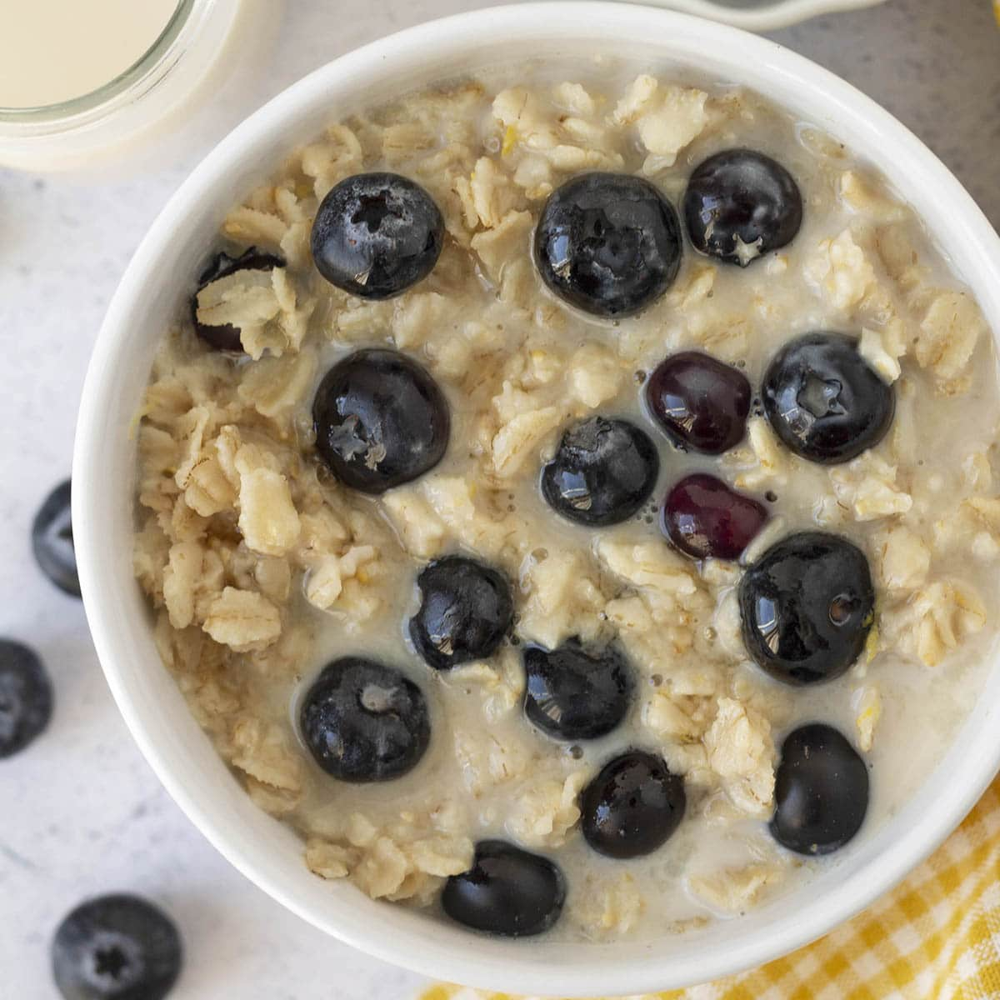

Oatmeal

Description
This recipe uses steel-cut oats, water, and blueberries
to create a wonderful oatmeal dish. A tablespoon of peanut
butter can be added after heating for those who seek
a higher protein content.
Ingredients
- 1/2 cup steel-cut oats
- Blueberries
- 8-9 ounces of water
Steps
- Add steel cut oats to a medium-sized bowl
- Add water
- Microwave on oatmeal setting (SO EASY)
- Sprinkle blueberries after microwaving